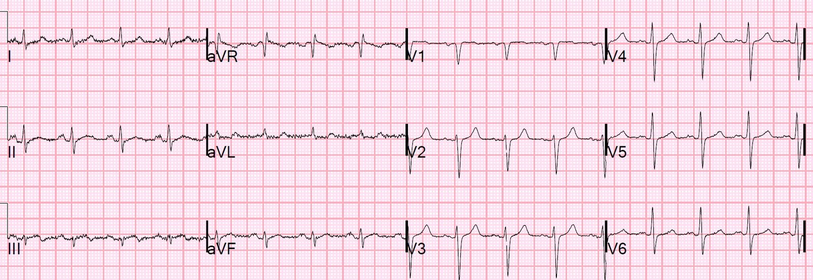
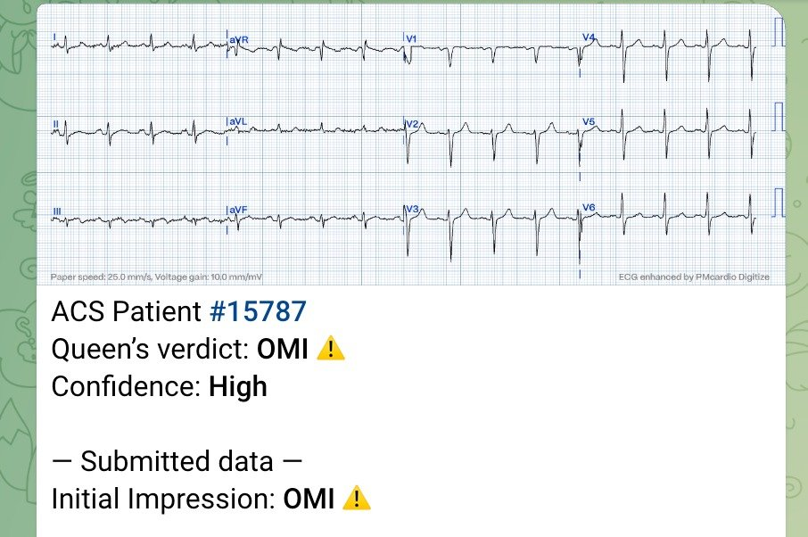
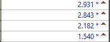
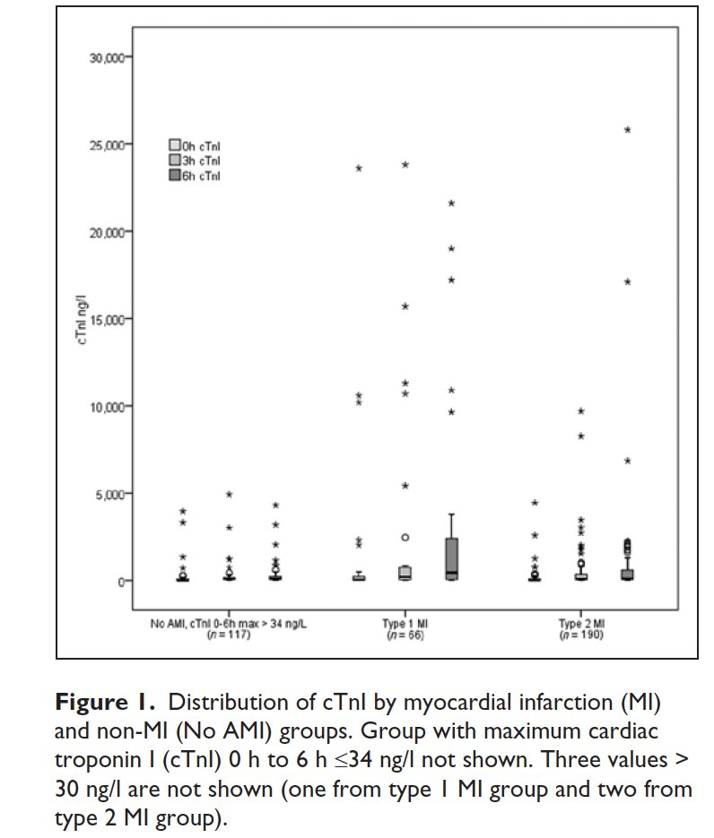
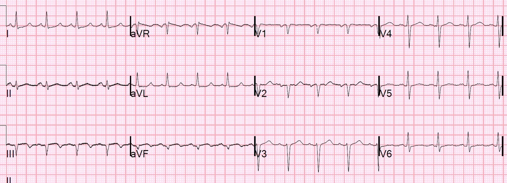
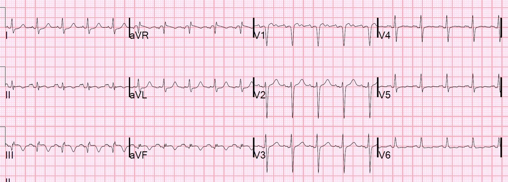
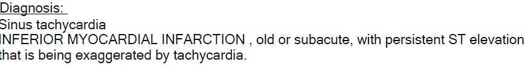
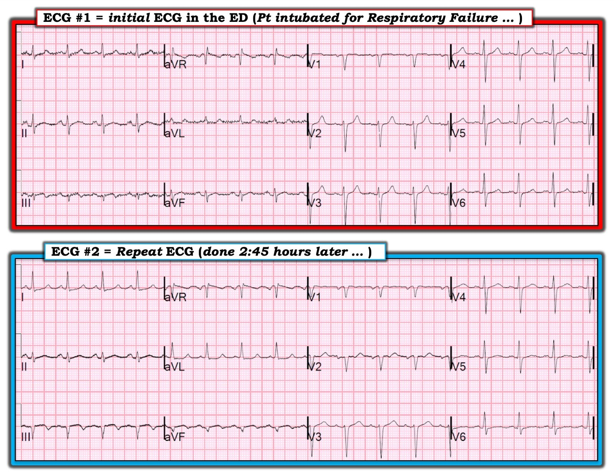
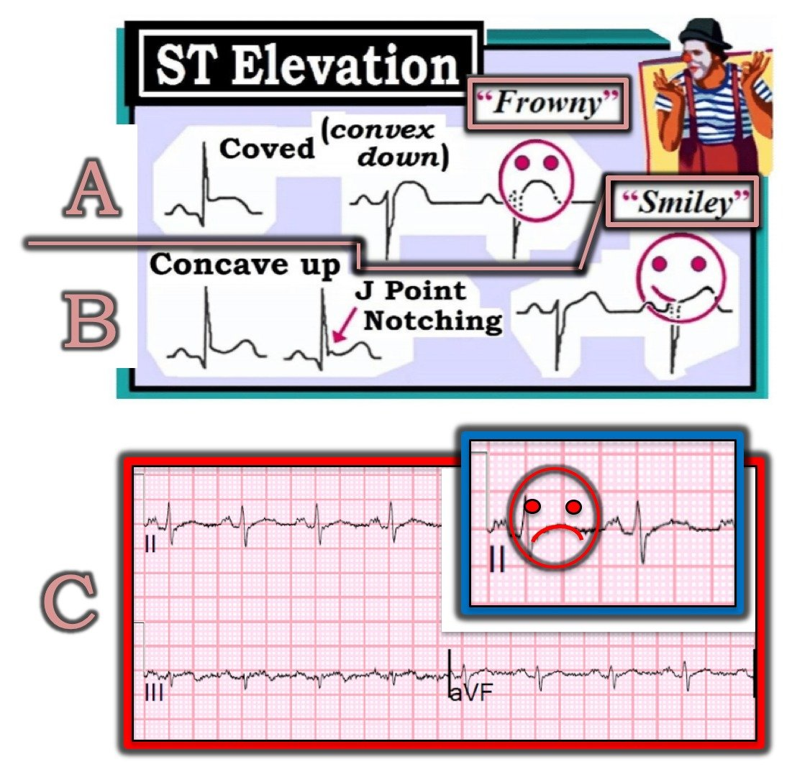

11/03/2019 — Bệnh nhân suy hô hấp và điện tâm đồ “bình thường” theo máy tính
Bản dịch tiếng Việt của bài "A Patient with Respiratory Failure and a Computer “Normal” ECG" – Dr. Smith’s ECG Blog. Giữ nguyên toàn bộ 11 hình ảnh của bản gốc.
Điện tâm đồ này đã được trình bày tại một hội nghị.
Bệnh nhân đã nhiều lần đến khám vì khó thở (SOB). Lần này, bệnh nhân được đặt nội khí quản vì suy hô hấp, được cho là do hen phế quản.
Tôi được mời diễn giải điện tâm đồ của bệnh nhân tại hội nghị. Trước đó tôi chưa từng thấy nó.
Điện tâm đồ-1:


Đây là kết quả đọc bằng máy tính: (thuật toán Veritas)
Đây là những gì tôi đã nói: “Đây là hình ảnh chẩn đoán nhồi máu cơ tim cấp thành dưới. Có ST chênh lên dốc lên ở III, kèm ST chênh xuống soi gương ở aVL. Bạn KHÔNG thấy điều này ở ST chênh lên biến thể bình thường, cũng không thấy ở viêm màng ngoài tim. Trường hợp duy nhất bạn thấy hình ảnh này mà không có thiếu máu cục bộ là khi QRS bất thường, chẳng hạn LVH, LBBB, phình thất trái (nhồi máu cơ tim cũ với ST chênh lên tồn tại dai dẳng) hoặc WPW.”
Nhiều năm sau, tôi đưa nó qua Queen of Hearts, và đây là câu trả lời của cô ấy:


Ứng dụng Queen of Hearts PM Cardio hiện đã có mặt tại Liên minh châu Âu (được phê duyệt CE) trên App Store và Google Play.
Với độc giả ở Mỹ, bạn cần chờ FDA. Nhưng trong lúc chờ đợi:
BẠN CÓ CƠ HỘI ĐƯỢC TRUY CẬP SỚM PM Cardio AI BOT!! (ỨNG DỤNG PM CARDIO OMI AI)
Nếu bạn muốn bot này giúp bạn chẩn đoán sớm OMI và cứu bệnh nhân cùng cơ tim của họ, bạn có thể đăng ký nhận phiên bản beta sớm của bot tại đây. Bot chưa được phát hành, nhưng đây là cách để bạn có tên trong danh sách.
https://share-eu1.hsforms.com/18cAH0ZK0RoiVG3RjC5dYdwfyfsg (biểu mẫu đăng ký nhận bản beta sớm của bot PM Cardio OMI AI)
Ca bệnh tiếp diễn
Các nhân viên y tế đã không nhận ra OMI này.
Bệnh nhân được điều trị tại ICU và được xét nghiệm troponin nhiều lần liên tiếp. Bệnh nhân không được ghi thêm điện tâm đồ nào.
Đây là diễn biến troponin I của bệnh nhân:


Các giá trị này được diễn giải là do thiếu máu cục bộ do tăng nhu cầu, hay nhồi máu cơ tim típ II.
Giá trị đầu tiên là 2.9 ng/mL và sau đó giảm xuống 1.5 ng/mL
Troponin I cao như vậy là rất bất thường trong nhồi máu cơ tim típ 2.
Đây là dữ liệu từ một nghiên cứu chúng tôi công bố năm 2014 về nhồi máu cơ tim không ST chênh lên (NonSTEMI) típ II:
Sandoval Y.
Nelson SE. Smith SW. Schulz KM. Murakami M.
Pearce LA. Apple FS. Cardiac Troponin Changes to Distinguish Type
1 and Type 2 Myocardial Infarction and 180-Day Mortality Risk (Thay đổi troponin tim giúp phân biệt nhồi máu cơ tim típ 1 với típ 2 và nguy cơ tử vong trong 180 ngày). Tạp chí Acute
Cardiovascular Care 2014;3(4):317-325.
Đây là một hình từ nghiên cứu đó:


Những ca như thế này khiến tôi tự hỏi liệu troponin có nên là một dấu hiệu sinh tồn hay không. Xem ca này:
Should Troponin be a Vital Sign? Perhaps, but only if Interpreted Using Pre-test Probability. (Troponin có nên là một dấu hiệu sinh tồn? Có lẽ, nhưng chỉ khi được diễn giải dựa trên xác suất tiền nghiệm.)
Sau khi nhập viện, bệnh nhân được xuất viện mà không hề được thăm dò gì về nhồi máu cơ tim cấp.
Bệnh nhân quay lại 5 ngày sau vì một đợt khó thở khác, và một lần nữa được chẩn đoán là hen phế quản (và có lẽ bệnh nhân cũng thực sự có hen phế quản).
Điện tâm đồ-2


Không rõ các bác sĩ điều trị có nhận ra điều này hay không.
Kết quả đọc chính thức, do một người không trực tiếp chăm sóc bệnh nhân thực hiện, là:
Máy tính: Nhồi máu cơ tim thành dưới không xác định được thời điểm.
Nếu bạn nhìn riêng lẻ điện tâm đồ này, điều đó là đúng. Có sóng Q hình thành rõ và sóng T đảo ngược.
Tôi không tham gia điều trị, nhưng tình cờ đang đọc chính thức các điện tâm đồ và thấy bản ghi này trong hệ thống:
Điện tâm đồ-3


Tôi xem lại điện tâm đồ trước đó (điện tâm đồ-2) và các giá trị troponin trước đó của bệnh nhân, rồi cho rằng bệnh nhân đã được chẩn đoán nhồi máu cơ tim cấp vài ngày trước.
Đó là một giả định sai. Tôi không nhận ra rằng bệnh nhân CHƯA được chụp mạch vành.
Máy tính: Nhồi máu cơ tim


Xử trí ở lần đến khám thứ 2 này:
Troponin là 0.224 ng/mL và đang giảm, và lại được cho là do thiếu máu cục bộ do tăng nhu cầu [mặc dù thực ra chúng chỉ đang giảm dần sau đợt (nhồi máu cơ tim típ 1) trước đó].
Bệnh nhân được xuất viện rồi lại quay lại.
Đến một thời điểm, bệnh nhân quay lại vì đau ngực, và khi đó tất cả các dữ kiện này mới được ghép nối lại với nhau.
Chụp mạch vành xác nhận nguyên nhân là ACS. Tại thời điểm này, tất cả các nhánh mạch đều thông và bệnh nhân được điều trị nội khoa (bằng liệu pháp kháng tiểu cầu kép).
Những điểm cần học
1. Một lần nữa, “Điện tâm đồ bình thường” theo máy tính thường là bất thường.
2. Troponin I lớn hơn 1.0 ng/mL hiếm khi là hậu quả của thiếu máu cục bộ do tăng nhu cầu (nhồi máu cơ tim típ 2). Hãy cảnh giác khi chẩn đoán nhồi máu cơ tim típ 2.
3. Nhiều trường hợp nhồi máu cơ tim không có đau ngực
4. BẤT KỲ MỨC ĐỘ ST chênh lên nào ở chuyển đạo III, kèm BẤT KỲ mức ST chênh xuống nào ở aVL, khi không có nhồi máu cơ tim cũ (phình thất trái thành dưới), WPW, LVH hoặc LBBB, đều là do nhồi máu cơ tim cấp cho đến khi chứng minh được điều ngược lại.

===================================
Bình luận của KEN GRAUER, MD (11/3/2019):
===================================
Một ca giảng dạy xuất sắc do Dr. Smith trình bày, cho thấy dễ bỏ sót một STEMI cấp đến mức nào khi bệnh sử không gợi ý chẩn đoán này và các dấu hiệu trên điện tâm đồ thì kín đáo.
- Tôi tập trung bình luận vào 2 bản ghi đầu tiên trong ca này — để cho rõ ràng, tôi đã ghép chúng lại trong Hình 1.


====================
BÌNH LUẬN: Như Dr. Smith đã nêu — Điện tâm đồ #1 là bản ghi ban đầu của bệnh nhân này, người đến khoa cấp cứu (ED) khi đã được đặt nội khí quản vì suy hô hấp. Kết quả đọc bằng máy tính cho bản ghi này là “Nhịp xoang; Điện tâm đồ bình thường” — và sự chú ý của các nhân viên y tế cấp cứu dường như tập trung vào xử trí các vấn đề hô hấp của bệnh nhân. Tôi muốn nhấn mạnh những điểm sau về ca này:
- Theo tôi — chẩn đoán bị bỏ sót không phải do lỗi của máy tính. Thay vào đó — đó là lỗi của nhân viên y tế chấp nhận kết quả đọc của máy tính mà không tự mình diễn giải điện tâm đồ một cách độc lập trước khi xem máy tính nói gì. Chúng tôi đã đề cập vấn đề này nhiều lần trên Dr. Smith’s ECG Blog. Quan điểm của tôi có thể khác với người khác — ở chỗ, với tư cách một bác sĩ điều trị chính (Attending) chịu trách nhiệm đọc lại (overread) điện tâm đồ cho rất nhiều nhân viên y tế — tôi rất thích kết quả đọc bằng máy tính một khi đã hiểu rõ máy tính có thể làm gì và không thể làm gì. Đó là vì máy tính đã giúp tôi tiết kiệm RẤT NHIỀU thời gian (!) nhờ đẩy nhanh đáng kể việc diễn giải của tôi, khi tôi phải đối mặt với cả một chồng điện tâm đồ lớn trước mặt cần đọc. Nhưng với bất kỳ ai đã đọc ít hơn nhiều nghìn bản ghi — điều bắt buộc là không được nhìn dù chỉ thoáng qua kết quả đọc của máy tính cho đến sau khi CHÍNH BẠN đã tự mình diễn giải điện tâm đồ một cách độc lập! Không làm theo lời khuyên này rất có thể sẽ dẫn đến bỏ sót những nhồi máu cơ tim cấp kín đáo, như đã xảy ra trong ca này. LƯU Ý: Tôi trình bày chi tiết hơn cách tiếp cận của mình về Việc sử dụng tối ưu các báo cáo điện tâm đồ bằng máy tính TẠI ĐÂY.
- Cần nhận thấy rằng chất lượng kỹ thuật của điện tâm đồ #1 rõ ràng là chưa tối ưu. Đó là vì có rất nhiều nhiễu đường nền ở mỗi chuyển đạo chi. Theo kinh nghiệm của tôi, nhiều bác sĩ lâm sàng không thừa nhận sự hiện diện của nhiễu rõ ràng — điều có thể khiến việc nhận ra các dấu hiệu cấp tính kín đáo trở nên khó khăn hơn rất nhiều. Tôi xin nhấn mạnh rằng cả Dr. Smith lẫn tôi đều không gặp khó khăn gì khi phát hiện các dấu hiệu nhồi máu cơ tim mới xảy ra trên điện tâm đồ #1 bất chấp nhiễu — NHƯNG— khi nhiễu cản trở việc diễn giải, và các dấu hiệu trên điện tâm đồ kín đáo (như trên điện tâm đồ #1) — tốt nhất nên có ngưỡng thấp để ghi lại điện tâm đồ ngay khi có thể. Cần hiểu rằng bạn có thể không loại bỏ được hết nhiễu ở một bệnh nhân bệnh nặng cấp tính đang suy hô hấp rõ rệt: i) Đáng để thử lần thứ 2 nhằm có được điện tâm đồ chất lượng tốt hơn; và, ii) Nếu một biến cố tim cấp đang diễn ra — thì điện tâm đồ ghi lại vài phút sau có thể cho thấy dấu hiệu tiến triển cấp tính, ngay cả khi vẫn còn nhiều nhiễu.
Dr. Smith đã ghi nhận trong phần Những điểm cần học của ca này rằng “Nhiều trường hợp nhồi máu cơ tim không có đau ngực”. Dữ liệu về khái niệm nhồi máu cơ tim “thầm lặng” (silent MI) lần đầu tiên được mô tả trong các Nghiên cứu Framingham ban đầu. Đáng ghi nhớ những phát hiện quan trọng từ nghiên cứu này:
- Hơn 1/4 tổng số ca nhồi máu cơ tim không kèm đau ngực.
- Trong nhóm này (tức là nhóm chiếm >1/4 tổng số ca nhồi máu cơ tim) — khoảng MỘT NỬA hoàn toàn KHÔNG có đau ngực. Nửa còn lại ( = >1/8 tổng số ca nhồi máu cơ tim) — có “một điều gì khác” (tức là một triệu chứng khác, “tương-đương-đau-ngực” nhưng không phải đau ngực). Trong danh sách “các triệu chứng khác không phải đau ngực” có khó thở — đau tiêu hóa — lú lẫn — yếu mệt — đau cơ (như trong một hội chứng “giống cúm”) — và đơn giản là “cảm thấy không khỏe”.
- Triệu chứng “tương đương đau ngực” không phải đau ngực thường gặp nhất là khó thở. Đây là lý do vì sao trong suốt nhiều năm, tôi luôn luôn ghi điện tâm đồ cho bất kỳ bệnh nhân trung niên hoặc lớn tuổi nào đến cấp cứu vì khó thở.
Các dấu hiệu Bất thường trên Điện tâm đồ #1 — Cần nhận thấy rằng không dưới 8 trong 12 chuyển đạo trên điện tâm đồ #1 có bất thường. Vì vậy, mặc dù các chuyển đạo đáng lo ngại nhất trên điện tâm đồ #1 là III và aVL — chính sự kết hợp của tất cả các chuyển đạo có dấu hiệu bất thường trên bản ghi này mới làm tôi lo ngại nhất. ĐIỂM THEN CHỐT (PEARL): Hãy chắc chắn rằng bạn luôn xem tất cả 12 chuyển đạo trên bản ghi. Làm như vậy thường sẽ “kể một câu chuyện” qua “chủ đề” tổng hợp của các dấu hiệu bất thường.
- Mặc dù khó thấy qua nhiễu — mỗi chuyển đạo trong 3 chuyển đạo thành dưới (tức là II, III, aVF) đều cho thấy đoạn ST dạng vòm (tức là hình “mặt mếu”). Như đã nêu — chuyển đạo III là bất thường nhất trong các chuyển đạo thành dưới, vì nó đã cho thấy sóng T đảo ngược. Nhưng đoạn ST thẳng đuỗn kèm xu hướng vòm xuống ở 2 chuyển đạo thành dưới còn lại (như thấy trên điện tâm đồ #1) là không bình thường.
- Mặc dù biên độ rất nhỏ và bị nhiễu làm méo — chuyển đạo aVL gợi ý ST chênh xuống hình soi gương với ST dạng vòm mà chúng ta thấy ở chuyển đạo III.
- Chuyển đạo chi phía bên còn lại ( = chuyển đạo I) cho thấy đoạn ST dẹt kín đáo, với chút gợi ý ST chênh xuống. Như xảy ra trong ca này — ST chênh xuống soi gương đi kèm nhồi máu cơ tim cấp thành dưới hầu như luôn rõ rệt hơn ở aVL so với ở chuyển đạo I — nhưng trong bối cảnh hình ảnh bất thường của aVL trên điện tâm đồ #1 — đoạn ST ở chuyển đạo I là không bình thường.
- Thông thường, trên các bản ghi bình thường có ST chênh lên dạng lõm (tức là hình “mặt cười”) nhẹ 1-2 mm ở V2 và V3 (Xem Ô B trong Hình 2). Thay vào đó — đoạn ST (trước sóng T) dẹt-hơn-bình-thường ở cả V2 và V3 trên điện tâm đồ #1, dù không có độ lệch đoạn ST rõ rệt. Trong bối cảnh các dấu hiệu bất thường ở chuyển đạo chi đã mô tả ở trên — đoạn ST (đặc biệt ở V2) là không bình thường, và với tôi gợi ý có thể có tổn thương thành sau cấp.
- Cuối cùng — sóng T ở chuyển đạo V6 trên điện tâm đồ #1 rất nhỏ. Điều này bất thường — và trong bối cảnh có bất thường ở 7 chuyển đạo còn lại — sóng T ở V6 là không bình thường.
====================
Diễn giải Điện tâm đồ #1: Với bệnh sử lâm sàng trong ca này (tức là Không có cách nào biết được LIỆU bệnh nhân có đau ngực hay không — vì bệnh nhân đã được đặt nội khí quản do suy hô hấp cấp) — tôi sẽ diễn giải điện tâm đồ #1 là cho thấy có thể nhồi máu cơ tim dưới-sau không rõ thời điểm. Là một điện tâm đồ riêng lẻ (và khi không có bệnh sử đau ngực mới) — tôi cho rằng không thể “định tuổi” ổ nhồi máu tiềm tàng này.
- Điểm cần nhấn mạnh là thuật ngữ “không rõ thời điểm” có nghĩa là NẾU có nhồi máu cơ tim, thì đó có thể là nhồi máu cơ tim cũ — hoặc có thể là nhồi máu cơ tim mới xảy ra, có thể vẫn đang tiến triển. Cần đối chiếu lâm sàng + giá trị troponin huyết thanh và các điện tâm đồ theo dõi để làm rõ điều này.
====================
Diễn giải Điện tâm đồ #2: Với điện tâm đồ thứ 2 được ghi trong ca này — giờ đã thấy rõ rằng bệnh nhân này thực sự đang tiến triển một nhồi máu cơ tim cấp thành dưới vì:
- Nhiễu cản trở việc diễn giải điện tâm đồ #1 đã hết — và giờ đây dễ hơn nhiều để diễn giải các dấu hiệu bất thường ở chuyển đạo chi. Có sóng Q lớn mới ở III và aVF trên điện tâm đồ #2 — kèm đoạn khởi đầu ST thẳng đuỗn của các đoạn ST chênh lên ở những chuyển đạo này + sóng T đảo ngược giờ đây có cả ở aVF cũng như ở III.
- Trên điện tâm đồ #2 dễ nhận ra hơn nhiều các thay đổi sóng ST-T soi gương ngược chiều theo kiểu hình soi gương ở aVL, so với ST chênh lên mà chúng ta thấy ở III.
- Trên điện tâm đồ #2 cũng dễ nhận ra hơn nhiều một mức ST chênh xuống soi gương ở chuyển đạo I.
- Cuối cùng — các bất thường sóng ST-T kín đáo ở V2, V5 và V6 đã tiến triển thêm — giờ đây tất cả đều cho thấy sóng ST-T dẹt rõ ràng trên điện tâm đồ #2.


====================
PHẦN BỔ SUNG: Phân tích mô tả các thay đổi sóng ST-T có thể gây nhầm lẫn. Các thuật ngữ “lõm lên” và “lồi xuống” thường được dùng để mô tả hình dạng của các đoạn ST chênh lên.
- Tôi được dạy rằng hình dạng đoạn ST ở Ô B của Hình 2 phản ánh ST chênh lên với bề lõm hướng lên — so với hình dạng ST chênh lên ở Ô A, vốn là lồi xuống.
- Dù vậy, việc đoạn ST được mô tả là lõm lên hay lồi xuống thực sự phụ thuộc vào việc người xem nhìn từ phía trên hay phía dưới đoạn ST. Dùng thuật ngữ này có thể gây nhầm lẫn …
- Để rõ ràng khi trao đổi giữa các đồng nghiệp — tôi ưa dùng các thuật ngữ mô tả hình “mặt cười” (mà theo thuật ngữ tôi được dạy thì là lõm lên) — và hình “mặt mếu” (tương ứng với lồi xuống theo thuật ngữ tôi được dạy).
- Tôi cũng thích thuật ngữ mô tả “dạng vòm” — để phản ánh đoạn ST hình “mặt mếu”.
- Về mặt lâm sàng — tầm quan trọng của HÌNH DẠNG đoạn ST không thể bị đánh giá quá cao! Nhìn chung — ST chênh lên hình mặt cười nhiều khả năng lành tính hơn (như thường thấy ở các biến thể tái cực) — trong khi đoạn ST dạng vòm nhiều khả năng phản ánh một quá trình cấp tính hơn. LƯU Ý: Quy luật chung này có nhiều ngoại lệ! Do giới hạn dung lượng, ở đây không thể bàn luận đầy đủ về các ngoại lệ này. Ý của tôi đơn giản là đoạn ST ở mỗi chuyển đạo thành dưới trên điện tâm đồ #1 (được thể hiện trong Ô C của Hình 2) gợi ý xu hướng ST dạng vòm, vốn không phải là hình dạng đoạn ST bình thường ở các chuyển đạo thành dưới. Điều này thấy rõ nhất qua hình “mặt mếu” tưởng tượng mà tôi đã chồng lên đoạn ST được phóng to của chuyển đạo II.